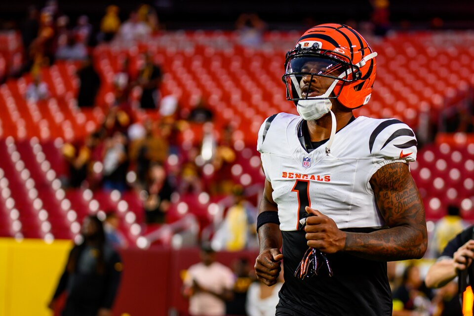

Bengals Week 11:
Twenty-Two To Twenty
The Bengals lost 22-20 at Washington on Monday night when Drew Stevens kicked his fifth field goal as time ran out, 46 seconds after Evan McPherson had put Cincinnati ahead from 56 yards. The winning streak ends at five.

Ja'Marr Chase: All-Pro Reels / CC BY-SA 4.0
Commanders 22, Bengals 20, Northwest Stadium
Forty-six seconds
The Bengals lost 22-20 at Washington on Monday Night Football and are 7-3. Their five-game winning streak is over.
Evan McPherson kicked a 56-yard field goal with 46 seconds left to put Cincinnati ahead 20-19. Jayden Daniels then took Washington down the field with no timeouts, two long completions to Antonio Williams, and Drew Stevens kicked the winner as time expired. It was his fifth field goal of the night. Williams finished with nine catches for 122 yards, a career high. Just before McPherson's kick, Burrow had a pass nearly intercepted by Rasul Douglas and was sacked on the next play.
Joe Burrow completed 28 of 40 passes for 300 yards and two touchdowns, one of them a 31-yard catch by Tee Higgins. Mike Gesicki caught five for 77 and Samaje Perine had 97 yards from scrimmage. Ja'Marr Chase caught passes for 31 yards. Boye Mafe had three sacks, all in the first half, a career high, and he has 9.5 this season.
According to the Bengals, it was Burrow's eighth straight game completing at least 70% of his passes, which ties the NFL record shared by Joe Montana (1989) and Tua Tagovailoa (2024). He leads the league with 3,095 passing yards. We would have preferred the record and the win, but we will take the record.
Through our scoring
Every Bengal on a roster
Six of the seven started and scored 59.90 between them, less than half of last week's 121.41. Burrow and the Bengals defence started for TheSoop and Chase for geauxjack in the game for first place in this league. Without the three of them geauxjack led that game 144.44 to 143.56, and TheSoop won it by 19.42. The recap of that game is a separate piece today.
The Commanders were on rosters here too. Jayden Daniels scored 18.06 for derrek777, who beat OneManEra and went 2-0. Antonio Williams scored 19.20 on OneManEra's bench, more than Higgins scored in his lineup.
Week 12
The Saints at home
The Bengals host New Orleans in week 12. Tyler Shough is ceefry's quarterback, and ceefry plays ProfessorMerlyn in the first of the games between playoff bubble teams. Burrow starts for TheSoop against derrek777, whose quarterback is Daniels.